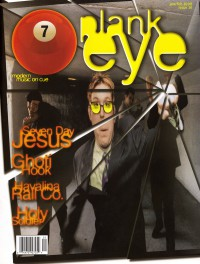

CMnexus
: Contemporary Christian culture, music, and media.
|
PlankeyeOn the cover
January 1998
7ball | Media coverage:- Jul 1995 in Heaven's Metal "plank eye", by Doug Van Pelt
- Mar 1996 in 7ball "Plankeye"
- Apr 1996 in HM "Plankeye", by Brian Vincent McGovern
- May 1996 in CCM "Sons of Adam (Again)", by Lucas W. Hendrickson
- Win 1996 in True Tunes News "Plankeye"
- Dec 1996 in CCM "In Concert: Memorial Auditorium, Chattanooga, TN", by Karly Randolph-Pitman
- May 1997 in Campus Life "Plankeye", by MadDog
- Oct 1997 in CCM "In Concert: World Fest 3", by Scott Mathias
- Nov 1997 in HM "There's Only One Plankeye", by Dan MacIntosh
- Jan 1998 in 7ball "Plankeye", by Frank Chimento
- Jan 1998 in CCM "Fast Times", by Mike Parker
- Jan 1998 in HM "Concert Review: The Prayer Chain, Plankeye, etc.", by Dan MacIntosh
- Jul 1998 in HM "Concert Review: Morella's Forest, Plankeye, Five Iron Frenzy", by Val Sutton
- Spr 1999 in FUEL "Five Albums Later, Plankeye say Hello", by Joe Mendonca, Chris Estey
- Jul 1999 in HM "In With The New", by Melissa Marie Konieczko
- Sep 1999 in 7ball "Walking The Plank", by Marcia Bartenhagen
- May 2001 in HM "The After New", by Melissa Marie Konieczko
Albums & reviews:Award Summary (Nominations / Wins)
Dove AwardsBooks about Plankeye
- "Plankeye" in The Encyclopedia of Contemporary Christian Music (Mark Allan Powell, 2002).
|
|